Objectives
At the end of this section you will be able to:
-
Use one-way ANOVA to determine if there is a significant difference between three or more means.
-
Use technology appropriately.
| Method A | Method B | Method C |
| 4.2 | 5.1 | 6.0 |
| 4.8 | 5.4 | 6.3 |
| 5.0 | 5.0 | 5.8 |
| 4.5 | 5.6 | 6.1 |
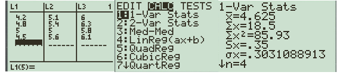
| Source | Sum of Squares | Degrees of Freedom | Mean Square | \(F\) |
| Between Groups | \(4.072\) | \(2\) | \(2.036\) | \(25.29\) |
| Within Groups | \(0.7242\) | \(9\) | \(0.0805\) | |
| Total | \(4.7962\) | \(11\) |
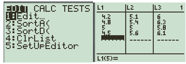
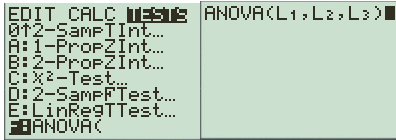
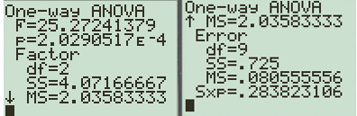
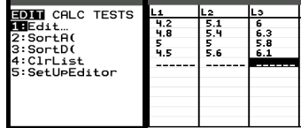
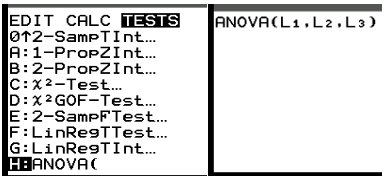
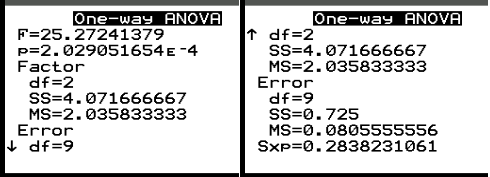
| Colorado | Oklahoma | Texas | Missouri |
| 48 | 67 | 132 | 41 |
| 52 | 71 | 145 | 38 |
| 50 | 69 | 138 | 44 |
| 47 | 73 | 141 | 40 |
| 53 | 68 | 136 | 42 |
| Source | Sum of Squares | Degrees of Freedom | Mean Square | \(F\) |
| Between Groups | \(29147.35\) | \(3\) | \(9715.78\) | \(933.31\) |
| Within Groups | \(166.53\) | \(16\) | \(10.41\) | |
| Total | \(29313.88\) | \(19\) |
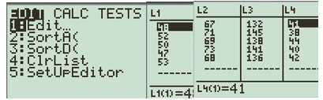
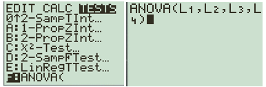
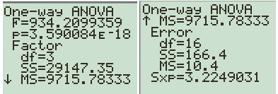
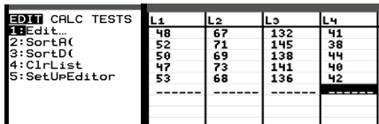
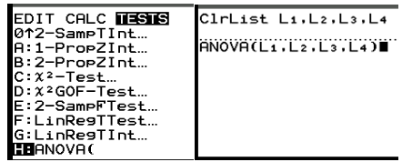
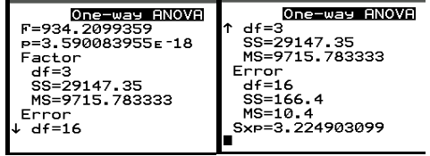
| Fertilizer A | Fertilizer B | Fertilizer C |
| 12 | 15 | 18 |
| 14 | 16 | 17 |
| 13 | 14 | 19 |
| 15 | 17 | 20 |
| 11 | 15 | 18 |
| Source | Sum of Squares | Degrees of Freedom | Mean Square | \(F\) |
| Between Groups | \(73.2\) | \(2\) | \(36.6\) | \(21.53\) |
| Within Groups | \(20.4\) | \(12\) | \(1.7\) | |
| Total | \(93.6\) | \(14\) |
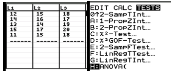
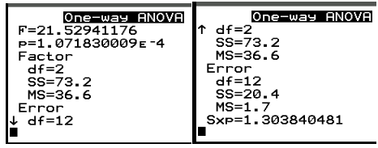